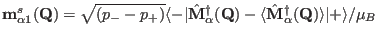
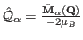

Next: External module functions drixs1 Up: Module Functions for Observables Previous: External module function mqcalc Contents Index
Similarly ”going beyond” dipolar approximation in the program mcdisp can be done with module functions dmq1 and estates. The input of dmq1 has similar arguments as du1calc, but as additional argument an orientation of the scattering vector, output should be a corresponding vector . Here  are the cartesian components of the scattering operator. dmq1 is called many times, for every scattering vector. In order to do an efficient calculation the eigenstates should be calculated only once, this is the task of function estates (see above).
The format to be used is:
extern "C" int dmq1(int & tn,double & th,double & ph,double J0, double & J2, double & J4, double & J6,ComplexMatrix & est,double & T, ComplexVector & mq1, float & maxE)
The meaning of the symbols is as follows:
on input
|tn| transition-number
sign(tn) >0 standard with printouts for user information,
<0 routine should omit any printout
th polar angle theta of the scattering vector Q
(angle with the axb axis=c axis) in rad
ph polar angle phi of the scattering vector Q
(angle with bx(axb)=a in the projection into
the bx(axb),b plane = angle with a in the projection into
the ab plane) in rad
J0,J2,J4,J6 form factor functions <jn(Q)>
est eigenstate matrix (as calculated by estates),
it should also contain population numbers of the states (row 0)
T Temperature[K]
mq1(1) ninit + i pinit (from mcdisp options -ninit and -pinit)
maxE maximum transition energy (from mcdisp option maxE)
on output
int total number of transitions
mq1 vector mq(alpha)=<-|-2Qalpha|+>sqrt(p- - p+)
Note on Qalpha
Cartesian components of the scattering operator Qalpha, alpha=1,2,3=a,b,c
according to Lovesey Neutron Scattering equation 6.87b
scattering operator is given in spherical coordinates Q-1,Q0,Q+1 (introduced
as described above on input of th and ph) these are related to euclidean
components by 11.123
Q1=Qbx(axb)
Q2=Qb
Q3=Qaxb
the orbital and spin contributions can be given as separate
components according to Lovesey Neutron Scattering
equations 11.55 and 11.71 (the spin part 11.71 has to be
divided by 2), i.e.
<-|QSa,b,c|+>=
=<-|sum_i exp(i k ri) s_(a,b,c)|+> /2 as defined by 11.71 / 2
<-|QLa,b,c|+>=
=<-|sum_i exp(i k ri) (-(k x grad_i)_(a,b,c)/|k|)|+> as defined by 11.54 /(-|k|)
thus for k=0 <QS>=<S>/2 and <QL>=<L>/2
Q=2QS+QL, M(Q)=Q/(-2muB)=mq1/muB
The module function must perform the following tasks: